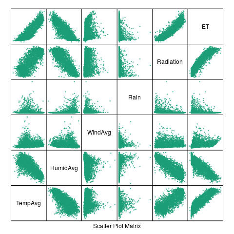
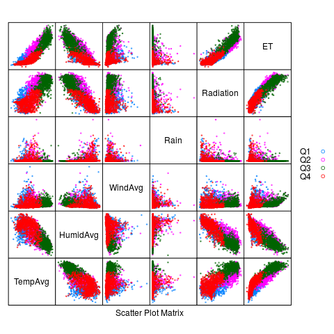

Gráficos con R
1 Introducción
1.1 Base y grid
1.1.1 Base y grid
- En
Rexisten dos formas de generar gráficos:- Base graphics
- Grid graphics
- Los gráficos base sólo producen un resultado gráfico, pero no un objeto.
- Los gráficos
gridgeneran un resultado gráfico y un objeto.
1.1.2 Gráficos grid
Dentro del conjunto grid existen dos grandes paquetes:
lattice- Implementación de los gráficos trellis, The Elements of Graphing Data de Cleveland)
- Estructura matricial de paneles definida a través de una fórmula.
xyplot(wt ~ mpg | am, data = mtcars, groups = cyl)
1.1.3 Gráficos grid
Dentro del conjunto grid existen dos grandes paquetes:
ggplot2- Implementación de The Grammar of Graphics de Wilkinson.
- Combinación de funciones que proporcionan los componentes (capas) del gráfico.
ggplot(mtcars, aes(mpg, wt)) + geom_point(aes(colour=factor(cyl))) + facet_grid(. ~ am)
1.2 Datos de ejemplo
1.2.1 Leemos desde el archivo local
aranjuez <- read.csv('data/aranjuez.csv') summary(aranjuez)
1.2.2 Añadimos algunas columnas
aranjuez$date <- as.Date(aranjuez$X)
aranjuez$month <- as.numeric( format(aranjuez$date, '%m')) aranjuez$year <- as.numeric( format(aranjuez$date, '%Y')) aranjuez$day <- as.numeric( format(aranjuez$date, '%j')) aranjuez$quarter <- quarters(aranjuez$date)
2 Gráficos Grid
2.1 Lattice
2.1.1 Lattice
- Documentación: Código y Figuras del libro
library(lattice)
2.1.2 xyplot
xyplot(Radiation ~ TempAvg, data=aranjuez)
2.1.3
2.1.4 Añadimos rejilla
xyplot(Radiation ~ TempAvg, data=aranjuez,
grid = TRUE)
2.1.5
2.1.6 Añadimos regresión lineal
xyplot(Radiation ~ TempAvg, data=aranjuez,
type=c('p', 'r'), grid = TRUE,
lwd=2, col.line='black')
2.1.7
2.1.8 Añadimos ajuste local
xyplot(Radiation ~ TempAvg, data=aranjuez,
type=c('p', 'smooth'), grid = TRUE,
lwd=2, col.line='black')
2.1.9
2.1.10 Paneles
xyplot(Radiation ~ TempAvg|factor(year),
data=aranjuez)
2.1.11
2.1.12 Grupos
xyplot(Radiation ~ TempAvg, groups=quarter,
data=aranjuez, auto.key=list(space='right'))
2.1.13
2.1.14 Paneles y grupos
xyplot(Radiation ~ TempAvg|factor(year),
groups=quarter,
data=aranjuez,
layout=c(4, 2),
auto.key=list(space='right'))
2.1.15
2.1.16 Paneles y grupos
xyplot(Radiation ~ TempAvg|factor(year),
groups=quarter,
data=aranjuez,
layout=c(4, 2),
type=c('p', 'r'),
auto.key=list(space='right'))
2.1.18 Colores y tamaños
xyplot(Radiation ~ TempAvg,
type=c('p', 'r'),
cex=2, col='blue',
alpha=.5, pch=19,
lwd=3, col.line='black',
data=aranjuez)
2.1.19
2.1.20 Colores con grupos
xyplot(Radiation ~ TempAvg,
group=quarter,
col=c('red', 'blue', 'green', 'yellow'),
pch=19,
auto.key=list(space='right'),
data=aranjuez)
2.1.21
2.1.22 Colores con grupos: par.settings y simpleTheme
- Primero definimos el tema con
simpleTheme
myTheme <- simpleTheme(col=c('red', 'blue', 'green', 'yellow'), pch=19, alpha=.6)
2.1.23 Colores con grupos: par.settings y simpleTheme
- Aplicamos el resultado en
par.settings
xyplot(Radiation ~ TempAvg,
groups=quarter,
par.settings=myTheme,
auto.key=list(space='right'),
data=aranjuez)
2.1.24
2.1.25 Colores: brewer.pal
library(RColorBrewer) myPal <- brewer.pal(n = 4, 'Dark2') myTheme <- simpleTheme(col = myPal, pch=19, alpha=.6)
- ColorBrewer: http://colorbrewer2.org/
2.1.26 Asignamos paleta con par.settings
xyplot(Radiation ~ TempAvg,
groups=quarter,
par.settings=myTheme,
auto.key=list(space='right'),
data=aranjuez)
2.1.27
2.1.28 Paneles a medida
xyplot(Radiation ~ TempAvg, data=aranjuez,
panel=function(x, y, ...){
panel.xyplot(x, y, ...)
minIdx <- which.min(x)
maxIdx <- which.max(x)
panel.points(x[c(minIdx, maxIdx)],
y[c(minIdx, maxIdx)],
cex=2, col='red')
panel.text(x[minIdx], y[minIdx],
'MIN', pos=1)
})
2.1.29
2.1.30 Matriz de gráficos de dispersión
splom(aranjuez[,c("TempAvg", "HumidAvg", "WindAvg", "Rain", "Radiation", "ET")], pscale=0, alpha=0.6, cex=0.3, pch=19)
2.1.31

2.1.32 Matriz de gráficos de dispersión
splom(aranjuez[,c("TempAvg", "HumidAvg", "WindAvg", "Rain", "Radiation", "ET")], groups=aranjuez$quarter, auto.key=list(space='right'), pscale=0, alpha=0.6, cex=0.3, pch=19)
2.1.33

2.1.34 levelplot
levelplot(TempAvg ~ year * day, data = aranjuez)
2.1.35
2.1.36 levelplot con una paleta mejor
- Usamos
colorRampPalettepara generar una función que interpola colores a partir de una paleta
levelPal <- colorRampPalette( brewer.pal(n = 9, 'Oranges'))
- Comprobamos que es una función generadora de colores
levelPal(14)
[1] "#FFF5EB" "#FEEBD9" "#FDE0C3" "#FDD3A8" "#FDC088" "#FDAB67" "#FD974A" [8] "#F9812F" "#F16B16" "#E45709" "#D14501" "#B13A02" "#973003" "#7F2704"
- Usamos esta función con
col.regions
levelplot(TempAvg ~ year * day,
col.regions = levelPal,
data = aranjuez)
2.1.37
2.1.38 contourplot
contourplot(TempAvg ~ year * day,
data = aranjuez,
lwd = .5,
labels = list(cex = 0.6),
label.style = 'align',
cuts = 5)
2.1.39
2.1.40 Box-and-Whiskers
bwplot(Radiation ~ month, data=aranjuez,
horizontal=FALSE, pch='|')
2.1.41
2.1.42 Box-and-Whiskers
bwplot(Radiation ~ month, data=aranjuez,
horizontal=FALSE,
panel=panel.violin)
2.1.43
2.1.44 Histogramas
histogram(~ Radiation|factor(year), data=aranjuez)
2.1.45
2.1.46 Gráficos de densidad
densityplot(~ Radiation, groups=quarter,
data=aranjuez,
auto.key=list(space='right'))
2.1.47
2.1.48 dotplot
avRad <- aggregate(Radiation ~ month * year,
data=aranjuez, FUN=mean)
dotplot(month ~ Radiation|factor(year), data=avRad)
2.1.49
2.1.50 Quantile-Quantile
firstHalf <- aranjuez$quarter %in% c('Q1', 'Q2') qq(firstHalf ~ Radiation, data=aranjuez)
2.1.51
2.1.52 Quantile-quantile
winter <- aranjuez$quarter %in% c('Q1', 'Q4') qq(winter ~ Radiation, data=aranjuez)
2.1.53
2.1.54 Quantile-Quantile
qqmath(~TempAvg, data=aranjuez,
groups=year, distribution=qnorm)